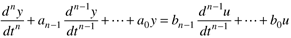
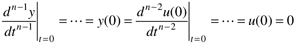
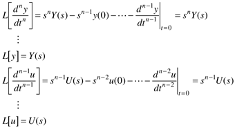
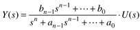
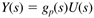
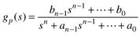
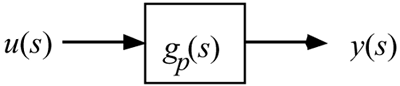

| [ Team LiB ] |
|
3.4 Transfer FunctionsA transfer function relates inputs to outputs in the Laplace domain. In particular, the Laplace domain relationship between a manipulated input and output is called a process transfer function. Consider an nth order differential equation,  Since we are assuming that the model is based on deviation variables, and that the system is initially at steady state, the initial conditions are  Taking the Laplace transform of each term,  Solving for Y(s), we find  The ratio of polynomials is called the transfer function. When it relates a manipulated input to an output it is commonly called a process transfer function. In general, we will use gp(s) to represent the process transfer function.  In this case the process transfer function is  The roots of the numerator polynomial are known as zeros, and the roots of the denominator polynomial are call poles. The significance of poles and zeros are discussed in detail in Section 3.9. We have used capital letters to distinguish Laplace domain variables from the time-domain variables. In the rest of this text we generally use lowercase letters for all input and output variables. If the argument is s, then we assume that we are referring to the Laplace domain. Transfer functions are often used in block diagrams. For example, the relationship between an input and output is shown as  In the rest of this chapter we study the dynamic behavior of some commonly used transfer functions. Our focus is on Step Responses, since process engineers often apply step changes to understand dynamic behavior. |
| [ Team LiB ] |
|